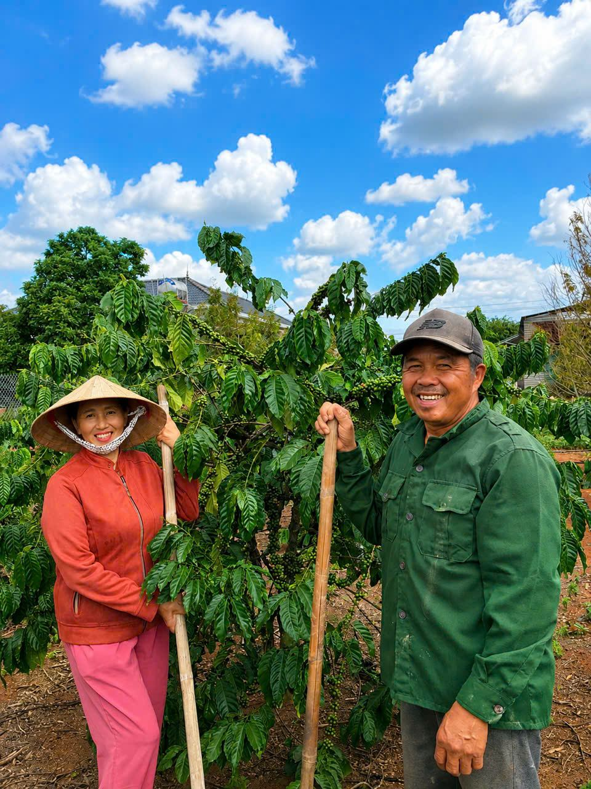

Câu chuyện thương hiệu
"Otosan" — người cha — là cách chúng tôi gọi hai điều đã nuôi lớn hành trình này: nông trại cà phê của gia đình ở Đắk Lắk, và những năm tháng trưởng thành tại Nhật Bản.
OTOSAN FARM ra đời từ mong muốn nối liền hai vùng đất: nơi hạt cà phê được trồng bằng công sức nhiều thế hệ của một gia đình Việt Nam, và nơi người tiêu dùng Nhật Bản đặt niềm tin vào chất lượng, sự minh bạch và độ ổn định của sản phẩm.
Chúng tôi không chỉ bán cà phê — chúng tôi xây dựng một hệ thống có thể theo dõi được: từ vườn cây, đến sơ chế, đến từng lô hàng xuất khẩu, để mỗi tách cà phê tại Nhật Bản đều có thể kể lại đúng câu chuyện của nó.

GỐC RỄ
Gia đình trồng cà phê nhiều thế hệ tại Đắk Lắk, vùng đất đỏ bazan nổi tiếng của Robusta Việt Nam.
HÀNH TRÌNH
Gần một thập kỷ học tập, nghiên cứu và làm việc tại Nhật Bản, mang theo tư duy chất lượng và kỷ luật vận hành.
KHỞI ĐẦU
OTOSAN FARM được xây dựng để đưa Fine Robusta chất lượng cao ra thị trường Nhật Bản và thị trường trong nước.
ĐỊNH HƯỚNG
Hiện kết hợp nguồn từ nông trại gia đình tại Đắk Lắk và nông hộ liên kết tại Gia Lai; định hướng tăng dần tỷ trọng từ chính nông trại Đắk Lắk, minh bạch chuỗi cung ứng và mở rộng dần sang các nông sản chất lượng khác.